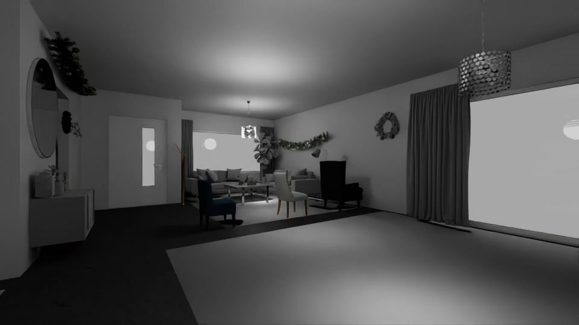

复用世界
从现成家居、商场、街区、工厂和医院中选择场景，保留原始资产与来源。
让导航智能，走进复杂世界。
从理解一句指令，到穿越真实的空间。
用六个能力维度，探索具身导航的下一程。
Navigation is where intelligence
meets the physical world.
NavForge 是一个建设中的具身导航 benchmark。我们将开放指令与复杂环境连接起来：辨认相似物体、记住跨层空间、持续执行多步任务，并在不同环境与运动约束下完成导航。
复用现成场景与资产，以任务、轨迹和第一人称视频构建可检查、可扩展的研究基础。
查看能力框架 ↗看见场景。理解任务。
沿着路线，检验每一步。
每一维都对应一种真实挑战。
从语言与空间，延伸到身体与运动。

走进场景，跟随第一视角。
每一段视频，都是一个可讨论的导航问题。
试试任务编号，或选择另一个能力维度。
第一人称呈现沿途所见；三维轨迹揭示空间关系。
从楼梯连接到长程巡检，让复杂路线一目了然。
轨迹来自对应视频的相机位置。剖切仅用于观察空间连接；图像保留原有标注。
把成本花在有价值的问题上。
在已有世界里，设计值得测量的任务。
从现成家居、商场、街区、工厂和医院中选择场景，保留原始资产与来源。
明确指令、目标、空间约束和成功标准，将任务映射到六个能力维度。
用完整视频、轨迹和场景预览解释任务，逐项标明运行方式与验证范围。
当前展示的是资产与任务参考样例。相机回放、几何检查、机器人仿真执行与模型闭环评测具有不同含义；各样例注明已有证据，暂不展示模型排名或导航成功率。